Nausicaä do Vale do Vento é um filme de animação japonês de 1984 do escritor, diretor e ilustrador Hayao Miyazaki, baseado em um mangá de mesmo nome publicado em 1982 nas páginas da revista Animage. O lançamento do filme se deu antes da fundação do Studio Ghibli, que posteriormente adquiriu seus direitos.
A princesa Nausicaä é carismática, jovem e corajosa. Seu nome vem da personagem Nausicaä da Odisséia. Parte de sua personalidade veio do conto do folclore japonês A princesa que amava insetos.
Sinopse:
Informações extas:
Após os Sete Dias de Fogo, uma guerra que destruiu a civilização humana e a maior parte do ecossistema da Terra, surge uma floresta que exala gases venenosos. Apenas insetos e um ser conhecido como Ohmu vivem por lá. Nausicaä, filha do rei do Vale do Vento, tem o estranho poder de conseguir sentir o que a floresta sente e se vê obrigada a sair em uma jornada para tentar evitar outra guerra devastadora.
No Brasil o filme chegou em BluRay e DVD através do box da Coleção Studio Ghibli Vol. 1 lançado pela distribuidora Versátil Home Video em versão legendada.
Já os mangás de Nausicaä começaram a ser publicados em 2006 pela editora Conrad, mas teve seu lançamento cancelado no 5/7 volumes. A editora JBC anunciou recentemente que adquiriu os direitos de relançamento.
 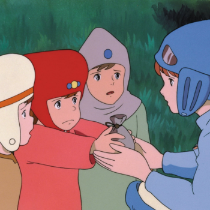
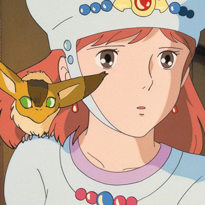
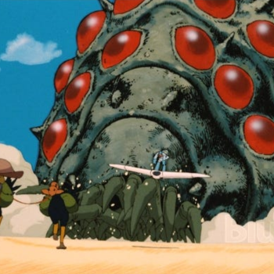
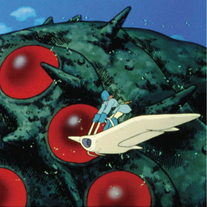
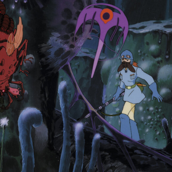
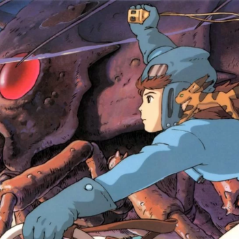
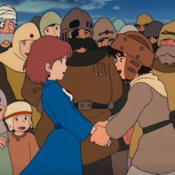
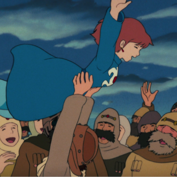
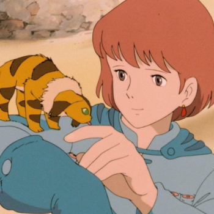
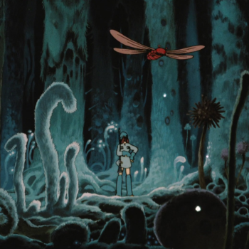
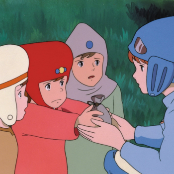
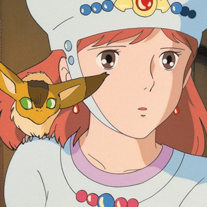
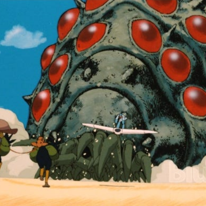
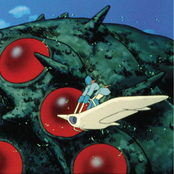
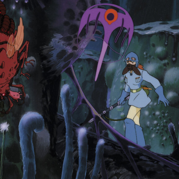
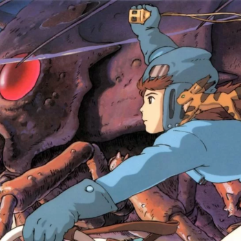
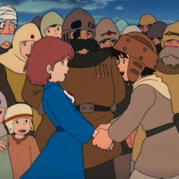
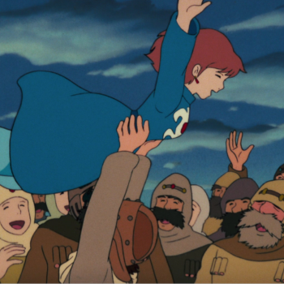
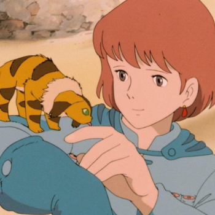
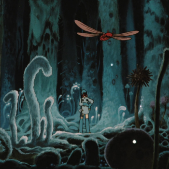